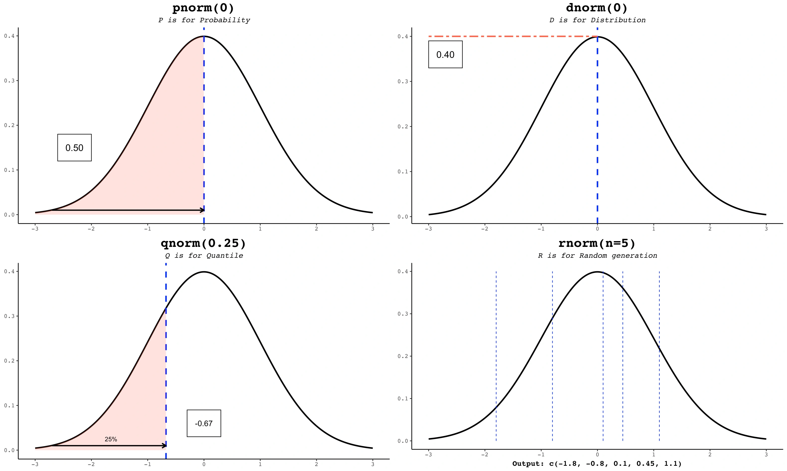

Jukseark for utvidelsen Nvim-R
nvim-R | runit | model F | pacman | osprober | spotify | DVD | keys | e-post
Snarveier | vimrc | utvidelser | R markdown | flytte splitt
Guide: How to turn vim into an R IDE 
,l - run (section) ,e - echo-run section _ - "left arrow" \rf - start \rq - leave \rv - view data frame \ro - object browser \rl - object echo \rr - clear console \o - output in file \vh - head() \rs - summary() \rg - plot() \ra - args() \rd - setwd() \rp - print() \rn - names() \rh - help \re - example
Tastatursnarveier til vimrc
~/.config/nvim/init.vim
" remapping the basic :: send line nmap <leader>l <Plug>RDSendLine " remapping selection :: send multiple lines vmap <leader>l <Plug>RDSendSelection " remapping selection :: send multiple lines + echo lines vmap <leader>e <Plug>RESendSelection
" KUN hvis dash - remap search key nmap <silent> <leader>d <Plug>DashSearch<CR>
Kompletterende utvidelser
- CSV Håndterer kolonneseparert data (CSV)
- Ncm2 Fortløpende utbokstavering Ncm-R r-integrasjon
- Ale Lint-tjener for debugging Lintr r-integrasjon
- Dash Hurtigoppslag av kommandoer
- UltiSnips Snippet-support for forhåndsdefinerte tekstblokker
- Languageserver alt
Installere R markdown fra CRAN
På arch-baserte distribusjoner er tcl og tk separate pakkersudo pacman -S tcl tkInstaller rmarkdown som root
# R
install.packages("rmarkdown", dep = TRUE)
Flytte splitt
C-w +/-